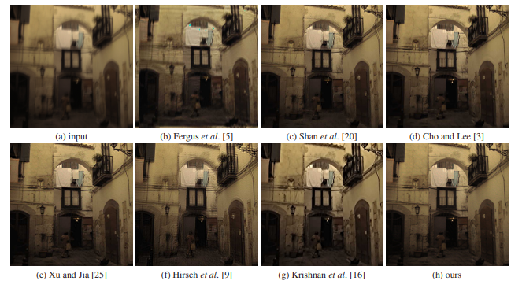
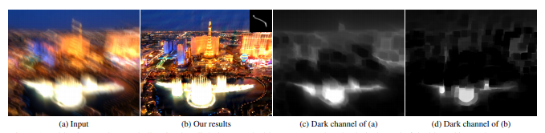
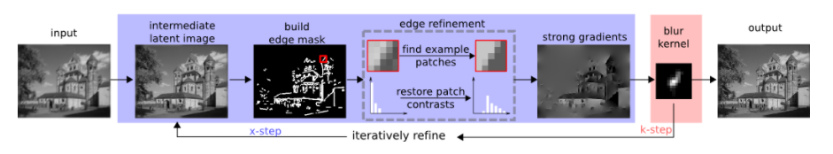
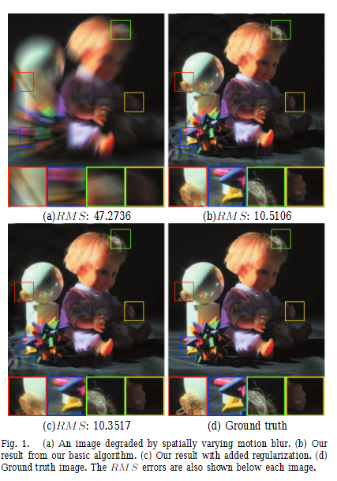
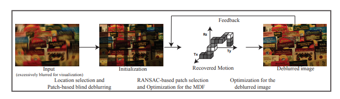

Deblurring Theorien¶
Konventionelles blind image deblurring¶
Bei den konventionellen blind image deblurring Methoden ist eine der grunsätzlichen Annahmen, dass die Bewegungsunschärfe spatially uniform ist und nicht heterogenous.
In diesen Theorien wurden bereits mehrere Ansätze genauer betrachtet, um die Bewegungsunschärfe zu entfernen. Dazu gehören unter anderem:
total variational regularizer mit der Maximum-a-posteriori-Methode (MAP). Das Verfahren schätzt einen unbekannten Parameter durch den Modalwert der A-posteriori-Verteilung.
Gaussian scale mixture priors, dabei wird angenommen, dass das Rauschen/ Blur gaußförmig ist.
Analyse der Interaktion zwischen Bildregularisierern und den Auswirkungen von Unschärfe auf die hohen Frequenzen in einem Bild. Dafür wurden neue Regularisierers eingeführt, der die Abschwächung der hohen Frequenzen kompensiert und damit den Kernel-Estimation stark stabilisiert (\(l_1/ l_2\)-Norm & \(l_0 Norm\)).

Quelle: [XZJ13]
Deblurring basierend auf dark channel based regularizers. Der Dark channel wird hauptsächlich zur Beschreibung der Minimalwerte in einem Bildausschnitt verwendet.

Quelle: [PSPY18]
Zusätzlich wurden mehrere Estimator untersucht, um robustere und zuverlässige Kernel zu berechnen. Mögliche Estimator sind:
edge-extraction-based maximum-a-posteriori (MAP)

Quelle: [SCWH13]
gradient activation based MAP. Die Methode basiert basiert auf der Beobachtung, dass nur eine Teilmenge der Gradienten des latenten Bildes für die kernel-estimation ausreichend ist
variational Bayesian methods
Die Theorien, welche sich dieser Methoden annehmen, sind dabei aber sehr stark abhängig von den ersten Annahmen und Priors. Der praktische Einsatz dieser Theorien wird hierduch eingeschränkt.
Spatially-varying blur removal¶
Um mit räumlich variierender Unschärfe umzugehen, werden flexiblere blur Modelle vorgeschlagen.
Ein Ansatz ist ein projektives projective motion path model, die das unscharfe Bild als eine Integration einer klaren Szene unter einer Sequenz von projektiven Transformationen behandelt, die den Weg der Kamera beschreiben.

Quelle: [TB11]
Ein weiterer Ansatz ist, die Kamerabewegung als motion density function für non-uniform blur zu modellieren, die den Anteil der Zeit aufzeichnet, der in jedem diskretisierten Teil des Raums aller möglichen Kamerapositionen verbracht wird.

Quelle: [GJZ+10]
Um die Unschärfe, die durch die Bewegung von Objekten verursacht wird, zu behandeln, segmentieren einige Methoden Bilder in Bereiche mit unterschiedlichen Arten von Unschärfe und sind somit stark von einer akkuraten Segmentierung eines unscharfen Bildes abhängig.
Ein pixelweises lineares Bewegungsmodell, um mit heterogener Bewegungsunschärfe umzugehen. Obwohl die Bewegung als lokal linear angenommen wird, gibt es keine Annahmen über die latente Bewegung, was es flexibel genug macht, um einen großen Bereich möglicher Bewegungen zu behandeln. Das Problem is hierbei, dass bei Kenntnis der spezifischen Arten von Bewegungsunschärfen herkömmliche Entschärfungsmethoden, die die globale Kamerabewegung schätzen, bessere Ergebnisse in weniger texturierten Regionen liefern.
Learning based motion blur removing¶
In den neusten Papern werden lernbasierte Methoden verwendet, um eine flexiblere und effizienteres Entfernen von Bewegungsunschärfe zu erreichen.
Es wurden einige diskriminative Methoden für die nicht-blinde Dekonvolution vorgeschlagen, die auf
Gaussian conditional random fields
Multi-Layer-Perceptron (MLP)
Deep Convolution Neural Network (CNN)
basieren, die alle die bekannten blur-kernel benötigen. Einige End-to-End-Methoden wurden vorgeschlagen, um unscharfe Bilder zu rekonstruieren, allerdings können sie nur mit leichter Gaußscher Unschärfe umgehen.
Die relevanteste Arbeit ist eine Methode, die auf einem CNN und der Klassifizierung des blur-types auf Patch-Ebene basiert, die sich ebenfalls auf die Schätzung des motion flow aus einem einzelnen unscharfen Bild konzentriert. Dabei wird das CNN auf kleinen Patch-Beispielen mit gleichmäßiger Bewegungsunschärfe trainiert, wobei jedem Patch ein einzelnes Bewegungslabel zugewiesen wird. Für den endgültigen dense motion flow sind viele Nachbearbeitungen wie Markov random field (MRF) erforderlich.